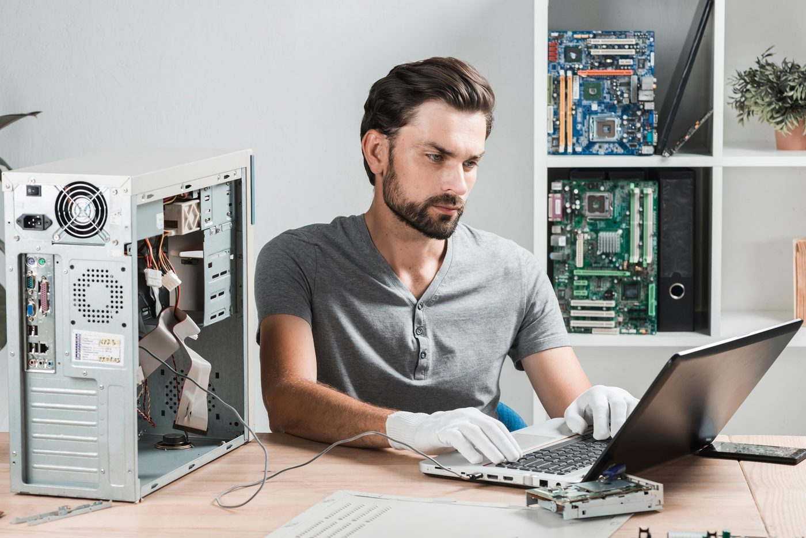
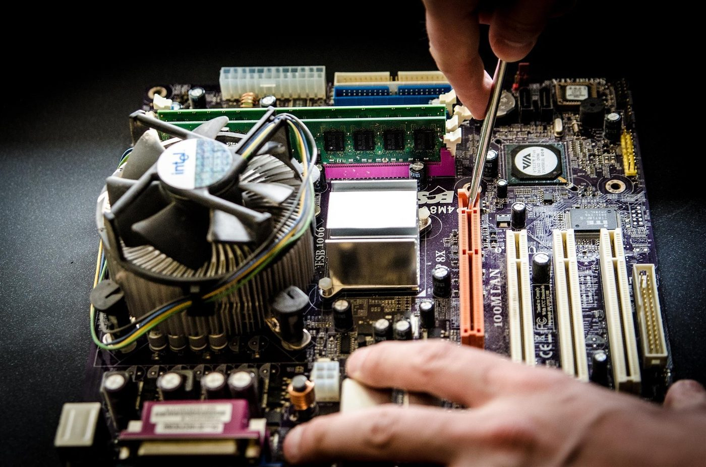

Mantén tu equipo rápido, limpio y seguro
Guía práctica de mantenimiento preventivo y correctivo para laptops y computadoras de escritorio, explicada paso a paso.
Comenzar ahora →
Explora el manual
Elige una sección para empezar.

Mantenimiento preventivo
Rutinas y frecuencias para evitar fallas antes de que ocurran.

Mantenimiento correctivo
Diagnóstico de síntomas y soluciones a problemas comunes.

Laptop
Batería, ventilación, pantalla y teclado: cuidados específicos.
PC de escritorio
Limpieza interna, fuente, ventiladores y pasta térmica.
¿Por qué importa el mantenimiento?
Un equipo cuidado rinde más y dura más años.
Un computador acumula polvo, archivos temporales, programas innecesarios y desgaste en sus componentes. Con el tiempo esto se traduce en lentitud, temperaturas elevadas, cierres inesperados y, en el peor caso, pérdida de información. El mantenimiento regular evita estas situaciones y reduce el gasto en reparaciones.
Además, un equipo limpio y actualizado consume menos energía, es más seguro frente a virus y mantiene su valor de reventa. Dedicar unos minutos cada semana suele ser más económico que reemplazar piezas o pagar una recuperación de datos.
Preventivo vs. correctivo
Dos enfoques que se complementan.
Preventivo
Se realiza antes de que haya fallas: limpieza, actualizaciones, respaldos y revisiones periódicas. Es planificado, barato y de bajo riesgo.
Correctivo
Se realiza después de que algo falla: diagnóstico, reparación o cambio de piezas. Suele ser más costoso e interrumpe el trabajo.
Cómo usar este manual
Recomendación de lectura.
- Empieza por Preventivo: establece tu rutina de cuidado.
- Consulta Correctivo cuando notes un síntoma anormal.
- Revisa Laptop o PC de escritorio según tu equipo.
- Revisa «Herramientas necesarias» dentro de cada página para saber qué materiales usar.